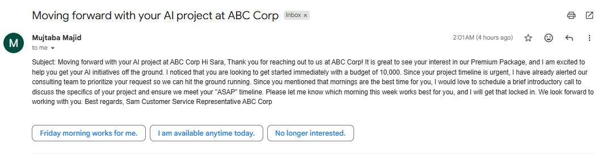
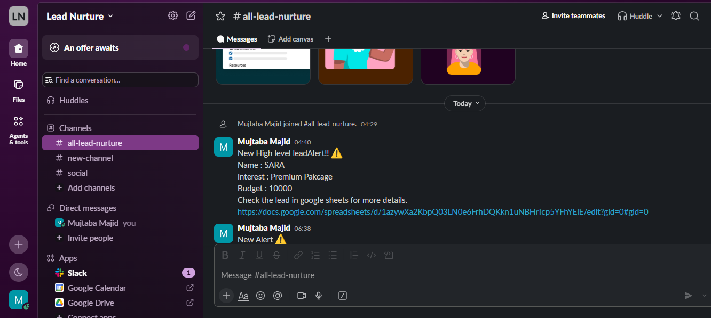

Sales · Follow-up
Lead Nurturing
Reads new leads from Google Sheets, sends a personal AI email with response buttons, and alerts the team on Slack about high-value leads.

The problem
Leads go cold when follow-up is late, and a high-budget lead can sit unnoticed in a sheet.
The solution
The workflow reads each lead from Google Sheets, waits, and asks Gemini to write a personal email using the lead's interest and budget. Gmail sends it with three reply buttons. If the lead looks high-value, a Slack alert goes to the sales channel with name, interest, budget and a link to the sheet. The sheet row is updated.
How it works
Read the lead
A Google Sheets node reads the lead's details.
Wait
A Wait node paces the follow-up.
Write the email
Gemini writes a personal message about the package and budget.
Send and track
Gmail sends the email with buttons, and the sheet row is updated.
Alert the team
A Slack tool posts a high-level lead alert.
See it working


What the screenshots show
- An email to a lead interested in the Premium Package with a 10,000 budget, and three buttons: “Friday morning works for me”, “I am available anytime today” and “No longer interested”.
- The Slack alert in #all-lead-nurture.
A good fit for
- Sales teams and agencies
- Training institutes
- Any business that follows up leads by email